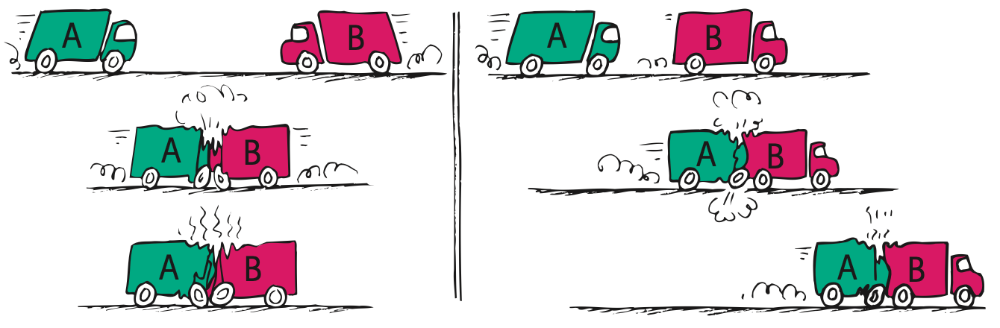

Conservation of Momentum
Mathematical idea: A before-and-after system model preserves total vector momentum when external impulse is negligible.
Use source images, short reading cycles, discussion, and applications to connect the physical situation to a model you can explain.
Learning Target
Students will use conservation of momentum to analyze collisions, explosions, recoil, and interacting systems.
I can statements
- I can explain what it means for momentum to be conserved.
- I can identify the system being analyzed in a momentum situation.
- I can distinguish internal forces from external forces.
- I can explain why momentum is conserved in both elastic and inelastic collisions when no net external impulse acts.
- I can compare before-and-after momentum in simple collision and recoil situations.
Vocabulary
These are words you will see in this section. Do not define them yet.
- conservation of momentum
- system
- internal force
- external force
- elastic collision
- inelastic collision
- recoil
- vector quantity
Use the preview activity to decide which words you already know, recognize, or do not know yet. Watch for these words in bold when they are first introduced or defined in the reading.
Preview: Skim Before You Read
Directions
Before reading closely, skim the vocabulary list and the section. Look at titles, headings, bold words, pictures, captions, diagrams, tables, and formulas. Do not try to understand everything yet. Your job is to notice what already looks familiar and make predictions about what this section may explain.
Step 1 — Sort the vocabulary. Write each vocabulary word in the column that best matches what you know right now. You may move a word later.
| Know for sure | Recognize | Don’t know yet |
|---|---|---|
Step 2 — Skim the section. Record what catches your attention before you read closely.
| What I noticed | |
|---|---|
| What I predict | |
| What I wonder |
Content: Read, Look, Annotate, Apply
Directions
Read in short chunks. Annotate the prose and the figures together: underline evidence, circle or highlight bold vocabulary, label arrows or measured features, connect a sentence to an image, and write short questions or connections in the margins.
Reading 1: Bouncing and momentum transfer
When an object bounces, its momentum changes more than when it merely stops because the direction reverses. The source uses a curved Pelton-wheel blade to show how making water turn around increases the impulse delivered to the wheel.
This matters because momentum is a vector quantity: direction is part of it. Bringing a moving object to zero momentum is one change; sending it back in the opposite direction produces an even larger change.

Image read: Annotate the quantities, directions, or before-and-after evidence that the reading asks you to track.
In collisions and bounces, forces between objects can transfer momentum from one part of a system to another. The next question is not only “what happens to one object?” but “what happens to the total momentum of everything we choose to include?”
This shift from one object to a whole system is the foundation of momentum conservation.
Stop and Discuss
- Trace the direction change of the water. Explain why reversing direction creates a larger momentum change than simply stopping.
- What receives the impulse when the water changes direction?
Teacher support: Listen for evidence tied to the reading or figure, not just a vocabulary definition. Ask students to name what changes, what stays the same, and why.
Example 1: Bounce versus stop
A ball moving right strikes a wall. Case A: it stops. Case B: it rebounds left with noticeable speed. Which case has the greater momentum change? Explain without calculating.
- Show the model, relationship, or comparison that answers the question.
- Explain what the result means physically.
Teacher answer: Model the reasoning explicitly. Check units/direction when calculation is used, and require a sentence that interprets the result rather than stopping at arithmetic.
You Try It 1: Bounce versus stop
A stream of water hits two paddles. One stops the water; the other turns it back. Which paddle receives the larger impulse? Explain.
- Use the same physics idea with this new situation.
- Explain how your evidence or calculation supports the conclusion.
Teacher answer: Expect the same core relationship as the example with the new context. Use errors to diagnose whether the student is confusing the quantity itself with the interaction or transformation that changes it.
Reading 2: Systems, internal forces, and conservation
A system is the object or collection of objects we choose to analyze. The source’s cannon example shows why system choice matters: if the system includes both cannon and cannonball, the forces they exert on each other are internal force interactions.
An external force comes from outside the chosen system. Only a net external impulse can change the total momentum of the system. Internal forces can redistribute momentum among parts, but they do not change the system’s total momentum.

Image read: Annotate the quantities, directions, or before-and-after evidence that the reading asks you to track.

Image read: Compare the visual evidence with the nearby reading. Mark the feature that best supports the physics claim.
The law of conservation of momentum says that when no net external impulse acts, the total momentum of the system remains unchanged. The assessment relationship writes this as $p_{before}=p_{after}$.
In cannon recoil, the cannonball gains momentum one way and the cannon gains momentum in the opposite direction. The cannon-ball system can begin with zero total momentum and still have two moving parts afterward because their momenta combine to the original total.
Stop and Discuss
- In the cannon image, mark the two opposite momentum directions.
- In the cue-ball figure, compare the one-ball systems with the two-ball system. Which choice makes momentum transfer look internal?
Teacher support: Listen for evidence tied to the reading or figure, not just a vocabulary definition. Ask students to name what changes, what stays the same, and why.
This relationship applies to the total momentum of the chosen system when no net external impulse acts during the event.
Example 2: Choose the system
A student studies a cannon and cannonball during firing. Explain why choosing “cannon + cannonball” helps reveal momentum conservation and identify one external force that could matter over a long time.
- Show the model, relationship, or comparison that answers the question.
- Explain what the result means physically.
Teacher answer: Model the reasoning explicitly. Check units/direction when calculation is used, and require a sentence that interprets the result rather than stopping at arithmetic.
You Try It 2: Choose the system
Two carts collide on a track. Define a system that makes the collision forces internal, then explain what condition is needed for momentum conservation.
- Use the same physics idea with this new situation.
- Explain how your evidence or calculation supports the conclusion.
Teacher answer: Expect the same core relationship as the example with the new context. Use errors to diagnose whether the student is confusing the quantity itself with the interaction or transformation that changes it.
Reading 3: Elastic and inelastic collisions
In an elastic collision, objects rebound without lasting deformation or major thermal-energy production in the ideal model. The source’s equal-mass balls show momentum being transferred from the moving ball to the ball that was initially at rest.
In an inelastic collision, objects deform, warm, or may stick together. Momentum is still conserved for an isolated system even though the motion after the collision looks very different. Momentum conservation does not require a bounce.

Image read: Annotate the quantities, directions, or before-and-after evidence that the reading asks you to track.

Image read: Compare the visual evidence with the nearby reading. Mark the feature that best supports the physics claim.

Image read: Compare the visual evidence with the nearby reading. Mark the feature that best supports the physics claim.
The freight-car and truck figures emphasize a before-and-after view: total momentum before the collision equals total momentum just after, even when the objects stick. External forces such as friction eventually change the momentum, but the short collision interval can make their impulse negligible compared with collision forces.
The important misconception to avoid is that “objects stopped, so momentum disappeared.” Momentum can be redistributed, canceled by opposite directions, or transferred to other parts of a larger system.
Stop and Discuss
- Compare what happens to the objects in the elastic and inelastic diagrams while identifying what stays conserved.
- On the truck diagram, use direction to explain how momenta can add or cancel.
Teacher support: Listen for evidence tied to the reading or figure, not just a vocabulary definition. Ask students to name what changes, what stays the same, and why.
Example 3: Collision before and after
A 1 kg cart moving right at 6 m/s sticks to a 2 kg cart at rest. Find the total momentum before collision, then state what total momentum the stuck carts must have just after.
- Show the model, relationship, or comparison that answers the question.
- Explain what the result means physically.
Teacher answer: Model the reasoning explicitly. Check units/direction when calculation is used, and require a sentence that interprets the result rather than stopping at arithmetic.
You Try It 3: Collision before and after
A 2 kg cart moving right at 4 m/s collides and sticks with a 2 kg cart at rest. Find total momentum before and state the required total after.
- Use the same physics idea with this new situation.
- Explain how your evidence or calculation supports the conclusion.
Teacher answer: Expect the same core relationship as the example with the new context. Use errors to diagnose whether the student is confusing the quantity itself with the interaction or transformation that changes it.
Reading 4: Recoil, explosions, and multiple directions
Recoil is backward motion that occurs when another part of a system gains forward momentum, as in a cannon or launcher. Recoil is not a failure of conservation; it is one way momentum is shared so the total stays consistent.
The same idea works in explosions. Internal forces can push pieces apart and change each piece’s momentum, but the vector sum of all piece momenta matches the momentum of the original system when external impulse is negligible.

Image read: Annotate the quantities, directions, or before-and-after evidence that the reading asks you to track.

Image read: Compare the visual evidence with the nearby reading. Mark the feature that best supports the physics claim.
The source extends the idea to collisions at angles. Momentum vectors can point in different directions, so total momentum is found by vector addition rather than by adding only numerical magnitudes.
The firecracker and right-angle car figures show why a before-and-after model must preserve both amount and direction. Conservation is about the total vector momentum of the system.
Stop and Discuss
- For the two cars, trace the component momentum directions and the resultant direction.
- For the firecracker, explain how two fragment momenta can combine to match the original momentum.
Teacher support: Listen for evidence tied to the reading or figure, not just a vocabulary definition. Ask students to name what changes, what stays the same, and why.
Example 4: Explosion reasoning
A cart at rest contains a compressed spring that pushes two parts apart. The system began with zero total momentum. What must be true about the two momentum vectors immediately after release?
- Show the model, relationship, or comparison that answers the question.
- Explain what the result means physically.
Teacher answer: Model the reasoning explicitly. Check units/direction when calculation is used, and require a sentence that interprets the result rather than stopping at arithmetic.
You Try It 4: Explosion reasoning
A firecracker moving downward explodes into pieces. Explain what must remain true about the vector sum of all fragment momenta just after the explosion.
- Use the same physics idea with this new situation.
- Explain how your evidence or calculation supports the conclusion.
Teacher answer: Expect the same core relationship as the example with the new context. Use errors to diagnose whether the student is confusing the quantity itself with the interaction or transformation that changes it.
Vocabulary: Define the Terms
You have now seen these words in the reading, images, and practice. Use this table to consolidate the physics meaning of each term.
| Vocabulary term | Definition |
|---|---|
| conservation of momentum | total momentum of a system remains unchanged when no net external impulse acts |
| system | the object or group of objects chosen for analysis |
| internal force | a force between parts of the chosen system |
| external force | a force on the system from something outside it |
| elastic collision | an ideal collision in which objects rebound without lasting deformation or major thermal-energy production |
| inelastic collision | a collision involving deformation, heating, or sticking |
| recoil | backward motion as another part of a system gains momentum in the opposite direction |
| vector quantity | a quantity with both magnitude and direction |
Summary
- Momentum is conserved for a chosen system when no net external impulse acts.
- Internal forces transfer or redistribute momentum; external impulse changes the system total.
- Both elastic and inelastic collisions conserve momentum under the same isolation condition.
- Recoil, explosions, and angled collisions require attention to momentum direction.
Teacher support: Ask students to connect at least two summary bullets into one cause-and-effect explanation and to name the figure or example that best supports it.
Common Mistakes
| Mistake | Why it is tempting | Check instead |
|---|---|---|
| Action-reaction forces cancel on one object. | They are equal and opposite. | They act on different objects; use a system boundary to decide what is internal. |
| Momentum is conserved only in elastic collisions. | Elastic collisions look “cleaner.” | Momentum conservation also applies to inelastic collisions when external impulse is negligible. |
| If objects stop, momentum was destroyed. | Visible motion may disappear. | Check the entire system and signed/vector momenta before and after. |
What condition must be true for a system’s momentum to remain conserved during an event?
Two carts collide and stick on a low-friction track. Explain why momentum can be conserved even though the carts do not bounce.
What is one thing you learned in this section? Explain it in at least one complete sentence.
What is one thing from this section you still need to understand or practice more? Be specific.